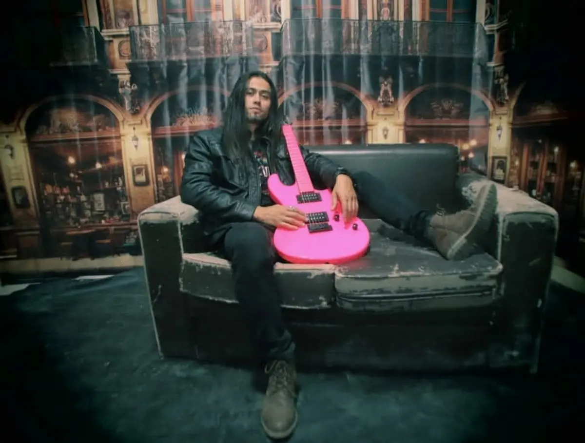

Dey Cuervosía
Cantautor costarricense · Desamparados, San José
Escuchar sencillo"De aire está hecho mi cuerpo" — ya disponible
Deynnier Amador Solórzano · Daniel Gazel · Marco Castro
Lanzamiento: 30 de mayo, 2026
Ver letra completa →"De aire está hecho mi cuerpo,
de viento y de luz solar,
de todo lo que no puedo
y de todo lo que soy al cantar..."
Deynnier Amador Solórzano, conocido en el arte como Dey Cuervosía, es un cantautor originario de Desamparados, San José, Costa Rica.
Su música fusiona la poesía íntima con sonidos que evocan la naturaleza y el alma humana. Con "De aire está hecho mi cuerpo", su primer sencillo, Dey invita a un viaje sonoro donde el viento y la voz se entrelazan.
Inspirado por los paisajes de su tierra y las historias de su gente, Dey Cuervosía construye canciones que son refugio y vuelo.
